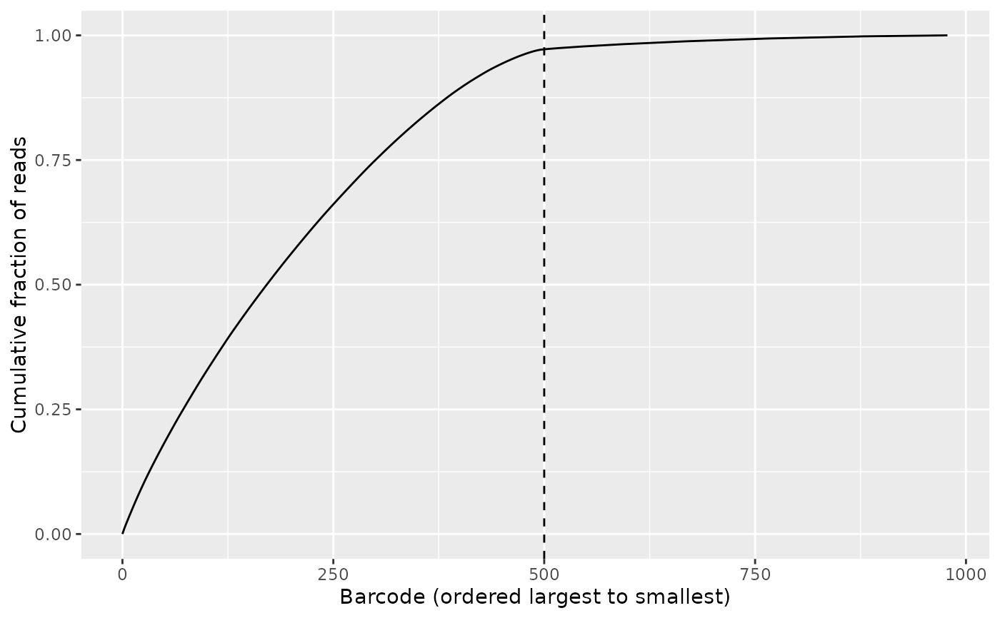
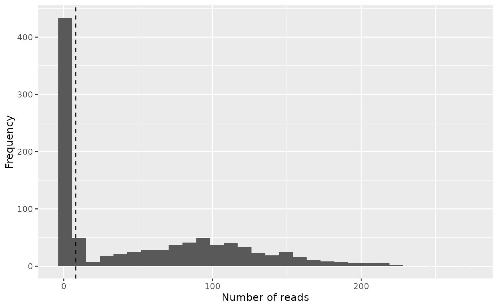
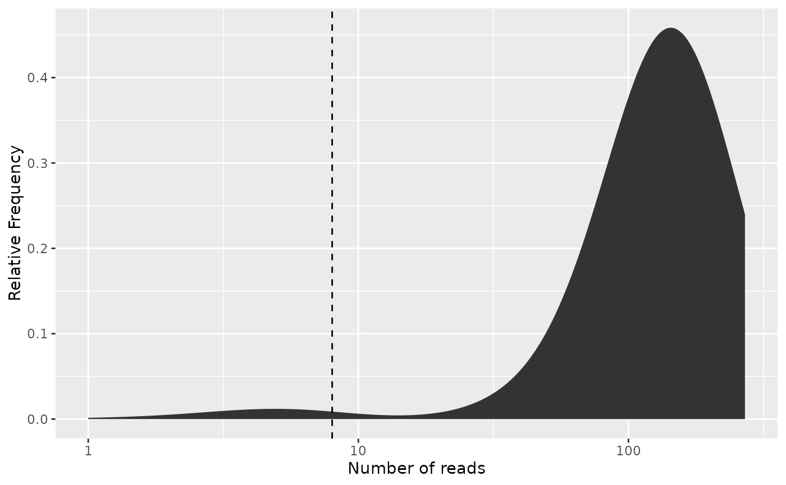

Diagnostic plots for determining the effect of the barcode cutoff.
freq_plot() shows a histogram or distribution plot of the
number of reads for each barcode combination,
whereas knee_plot() shows the cumulative fraction of reads
ranked by the frequency of the barcode combinations in descending order.
Usage
freq_plot(
freq_table,
cutoff = NULL,
type = "histogram",
log_scale_x = TRUE,
log_scale_y = FALSE,
scale_by_reads = FALSE
)
knee_plot(freq_table, cutoff = NULL)Arguments
- freq_table
The frequency table from
create_freq_table().- cutoff
Optional scalar numeric, the x-coordinate for drawing a vertical dashed line in the plots in order to indicate the cutoff. Please note that this argument is interpreted literally, meaning that in order to correctly display the same cutoff on both type of plots, the cutoff value has to be transformed. In order to safely convert between the two types of cutoffs, use the functions
bc_to_freq_cutoff()andfreq_to_bc_cutoff().- type
The type of frequency plot to make, either
'histogram'or'density'.- log_scale_x
Logical: Should a log scale be applied to the x-axis of the frequency plot?
- log_scale_y
Logical: Should a log scale be applied to the y-axis of the frequency plot?
- scale_by_reads
Logical: Should the y-axis of the plot be scaled by the number of reads on the x-axis?
Value
A ggplot object which can be
displayed immediately or further modified.
Examples
library(purrr)
library(Biostrings)
input_fastq <- system.file(
"extdata", "PETRI-seq_forward_reads.fq.gz", package = "posDemux")
reads <- readDNAStringSet(input_fastq, format = "fastq")
barcode_files <- system.file(
"extdata/PETRI-seq_barcodes",
c(bc1 = "bc1.fa", bc2 = "bc2.fa", bc3 = "bc3.fa"),
package = "posDemux"
)
names(barcode_files) <- paste0("bc", 1L:3L)
barcode_index <- map(barcode_files, readDNAStringSet)
barcodes <- barcode_index[c("bc3", "bc2", "bc1")]
sequence_annotation <- c(UMI = "P", "B", "A", "B", "A", "B", "A")
segment_lengths <- c(7L, 7L, 15L, 7L, 14L, 7L, NA_integer_)
demultiplex_res <- posDemux::combinatorial_demultiplex(
reads, barcodes = barcodes, segments = sequence_annotation,
segment_lengths = segment_lengths)
filtered_res <- filter_demultiplex_res(demultiplex_res, allowed_mismatches = 1L)
freq_table <- create_freq_table(filtered_res$demultiplex_res$assigned_barcodes)
bc_cutoff <- 500L
# Notice the bend (knee) of the curve
knee_plot(freq_table, cutoff = bc_cutoff)

# Note that we must convert the cutoff when constructing the frequency plot
freq_cutoff <- bc_to_freq_cutoff(freq_table, bc_cutoff)
# This is the most basic type of frequency plot which can be made,
# but it is a bit hard to interpret whether a selected cutoff is sensible
freq_plot(
freq_table, cutoff = freq_cutoff, type = "histogram",
log_scale_x = FALSE, log_scale_y = FALSE, scale_by_reads = FALSE)
#> `stat_bin()` using `bins = 30`. Pick better value `binwidth`.

# For most practical purposes, this is the most informative version
freq_plot(freq_table, cutoff = freq_cutoff, type = "density",
log_scale_x = TRUE, log_scale_y = FALSE,
scale_by_reads = TRUE)
